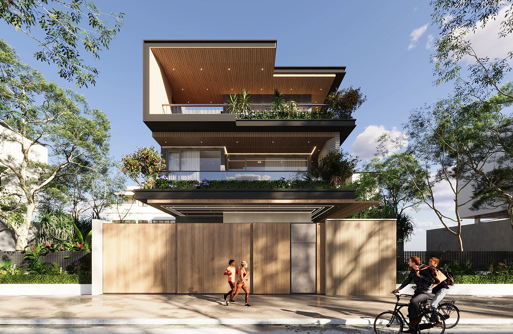

CÂU CHUYỆN CÔNG TRÌNH
Sự tương phản trong ánh nhìn
T&T Villa Resident là một câu chuyện được chúng tôi ghép nối, dung hòa và phát triển từ những ước mơ vụn vặt ghép nối của nhiều thế hệ trong 1 gia đình. Công trình được thi công và hoàn thiện tại 1 trung tâm Kinh tế, nơi mà mọi người thường xuyên lao đầu vào cuồng quay của những công việc riêng mà họ phải tự xoay sở và hoàn thành.
Mỗi thế hệ là các lát cắt khác nhau, cái nhìn khác nhau; tuy nhiên sự gắn bó của các thế hệ đó sẽ thật sự có giá trị hơn khi mang theo 2 tiếng "Gia đình".
Công trình thiết kế giao thông trục đứng với những khoảng không lớn giúp kết nói mọi người bằng thanh âm và những khung nhìn có chọn lọc. Chúng tôi đã gắn kết các thành viên trong gia đình bằng những câu chuyện không tên, và những thói quen vô hình.

"Những lát cắt khác nhau được tinh chỉnh và xếp lớp lên nhau."